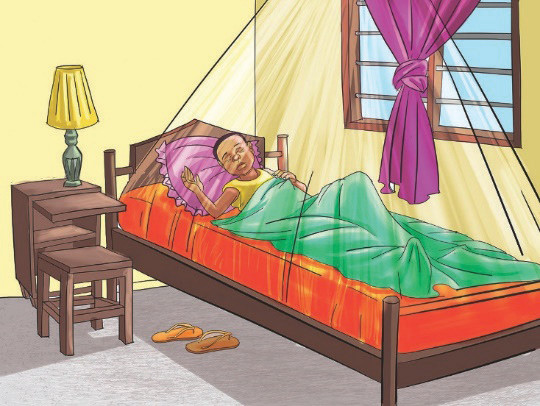

muda usiopungua saa nane kwa siku. Kielelezo namba 4 kinaonesha mtoto amelala katika mazingira safi na salama

d) Kuzingatia matumizi sahihi ya dawa
Matumizi yasiyo sahihi ya dawa huharibu mfumo wa kinga ya mwili. Pia, kutumia dawa mara kwa mara bila maelekezo ya daktari sio sahihi. Dawa inapoingia mwilini inafanya kazi ya kupambana na viini vya magonjwa. Hivyo, mfumo wa kinga unakuwa umeingiliwa utaratibu wake. Kadiri unavyozidi kunywa dawa, kinga ya mwili hupunguza uwezo wa kupambana na viini vya magonjwa. Hakikisha unapata ushauri wa daktari kabla ya kutumia dawa ya aina yoyote. Hivyo, si vizuri kutumia dawa kiholela.
e) Kunywa maji ya kutosha
Unywaji wa maji ya kutosha ni muhimu kwa afya. Kukosa maji ya kutosha mwilini husababisha chembe hai za mwili kushindwa kufanya kazi vizuri. Kwa mfano, kushindwa kuondoa takamwili zinazozalishwa mwilini. Takamwili zikijaa mwilini hudhoofisha kinga ya mwili. Unapokunywa maji ya kutosha takamwili hutoka kwa urahisi kwa njia ya mkojo au jasho. Hivyo, kunywa maji ya kutosha huimarisha kinga ya mwili.